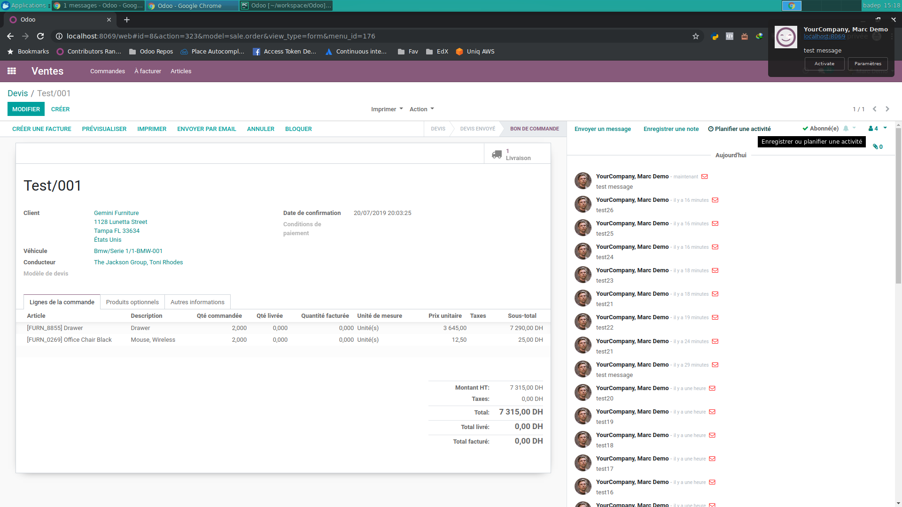

<section class="oe_container">
    <div class="oe_spaced">
        <h1 class="oe_slogan">Mail Push Notifications</h1>
        <h2 class="oe_slogan oe_mb32">Add push notifications for incoming messages</h2>
        <div class="oe_demo oe_screenshot">
            
        </div>
        <p>
            This module extends the native push notifications of Odoo to support all incoming messages instead of just chat messages.
        </p>
        <h3>Configuration</h3>
        <p>You can choose whether to use the internal bus (online) or Firebase Cloud Messaging (online & offline) for Push Notifications. For FCM, you'll need the <b>Server API Key</b>, the <b>VAPID Key</b>n and the <b>Messaging ID</b>. All of which you can get <a href="https://console.firebase.google.com/project/_/settings/cloudmessaging/">Here</a></p>
        <h3>Usage</h3>
        <p>Each time a user receives an incoming message they will also receive a native notification for it. The user can also click on the notification to open the related document.</p>
    </div>
</section>
